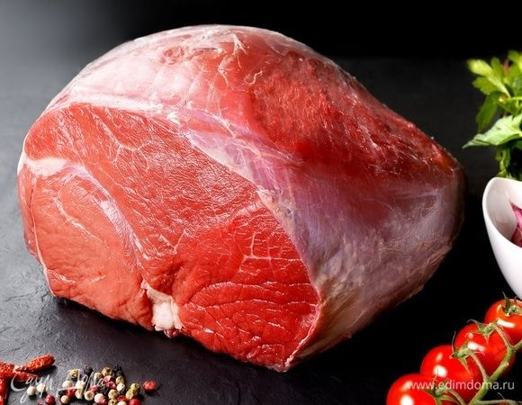

Mapa CarneCerta
Versatilidade e sabor para preparos rápidos e tradicionais
O patinho é um corte clássico, muito usado em pratos de panela, assados e preparos de sabor marcante.

Ideal para • panela • assado • cozido
Maciez
3/5
Equilibrada
Gordura
2/5
Moderada
Sabor
4/5
Marcante
Abrir recomendador inteligente
Patinho
Corte muito versátil, com sabor firme e boa resposta em receitas tradicionais.
O patinho se destaca em preparos de panela, cozidos longos e assados, oferecendo textura interessante e sabor marcante.
Panela
Assado
Cozido
4.1
Corte clássico
Excelente para quem busca um corte saboroso, com boa adaptabilidade entre receitas rápidas e preparos mais tradicionais.
Ideal para
Dica do açougueiro IA
Cozinhe em fogo baixo e deixe descansar antes de servir para realçar textura e suculência.